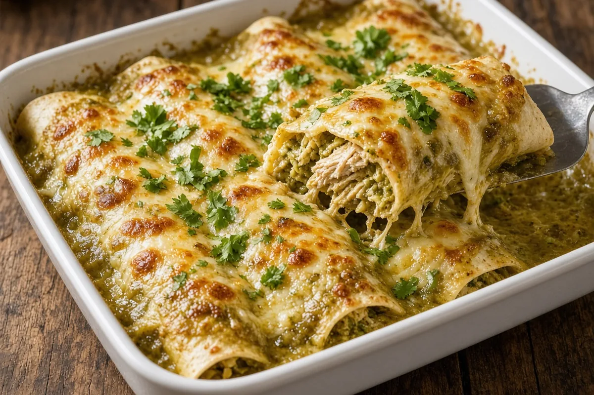

Green Chile Chicken Enchiladas
Shredded chicken, green chiles, sour cream, and Monterey Jack rolled in flour tortillas and baked in a creamy green enchilada sauce. A double batch fills two 9x13 pans and makes next-day leftovers.

12 servings
By
Yield: 12 servings
Prep:
Cook:
Total:
Difficulty: Medium
Ingredients
- 3 lb boneless, skinless chicken breasts, cut into 2-inch chunks
- 4 cups chicken broth
- 1 Tbsp olive oil
- 1 large yellow onion, diced
- 4 cloves garlic, minced
- 1 tsp ground cumin
- 2 cans (4 oz each) diced green chiles
- 2 cups sour cream, divided
- 4 cups shredded Monterey Jack cheese (16 oz), divided
- 1 tsp kosher salt
- 1/2 tsp black pepper
- 3 cans (10 oz each) green enchilada sauce
- 20 flour tortillas (8-inch)
- 1/2 cup chopped fresh cilantro, for serving
Instructions
- Heat the oven to 375°F. In a bowl, whisk the green enchilada sauce with 1 cup of the sour cream until smooth. Set the sauce aside.
- Put the chicken and the chicken broth in a large pot or Dutch oven. Bring to a simmer over medium-high heat, cover, reduce the heat to low, and cook 12 to 15 minutes, stirring once, until the chicken reads 165°F in the thickest chunk and shows no pink. Move the chicken to a bowl, let it cool 5 minutes, and shred it with two forks. Moisten it with 1/2 cup of the hot broth.
- While the chicken simmers, heat the olive oil in a large HexClad skillet over medium heat. Cook the onion 6 minutes, until soft. Add the garlic and cumin and cook 1 minute.
- In a large bowl, combine the shredded chicken, the onion mixture, the green chiles, the remaining 1 cup sour cream, 2 cups of the Monterey Jack cheese, the kosher salt, and the black pepper. Taste and adjust the salt.
- Spread 3/4 cup of the sauce over the bottom of each of two 9x13 baking dishes. Stack the tortillas, wrap them in a damp paper towel, and microwave 30 to 45 seconds so they roll without cracking. Spoon about 1/2 cup of the chicken filling down the center of each tortilla, roll it up snugly, and set it seam-side down in the dish, 10 per dish in two rows of 5.
- Pour the remaining sauce evenly over the enchiladas, spreading it to the edges so no tortilla is left dry. Cover each dish with foil and bake 20 minutes.
- Uncover, sprinkle 1 cup of the remaining Monterey Jack over each dish, and bake 8 to 10 minutes more, until the cheese is melted and spotted golden, the sauce is bubbling at the edges, and the centers read at least 165°F. Let the enchiladas rest 5 minutes, then top with the cilantro and serve 1 to 2 enchiladas per person.
Notes: This is a double batch: 20 enchiladas in two 9x13 pans, enough for dinner and next-day leftovers. Serve with Authentic Mexican Old School Rice and Quick and Easy Refried Beans. To make ahead, assemble through the sauce step, cover, and refrigerate up to 24 hours; add 10 minutes to the covered bake. Reheat leftovers covered at 350°F for 20 minutes.